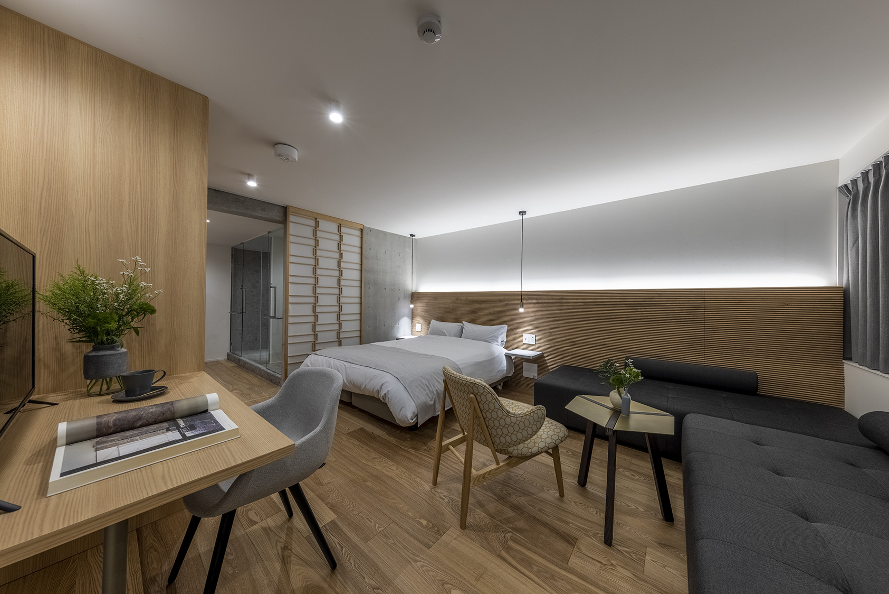
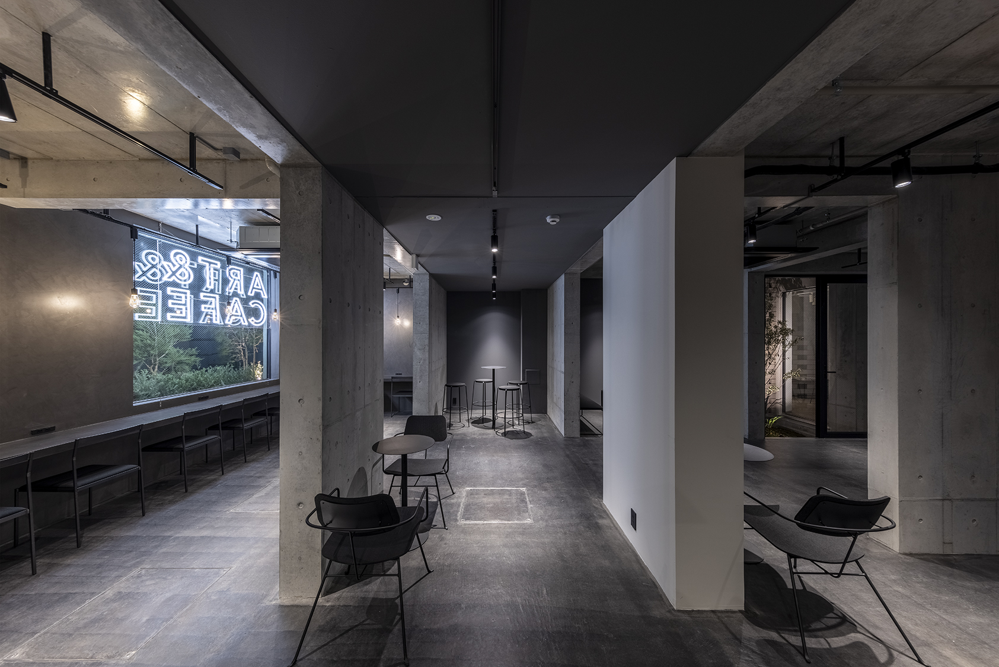
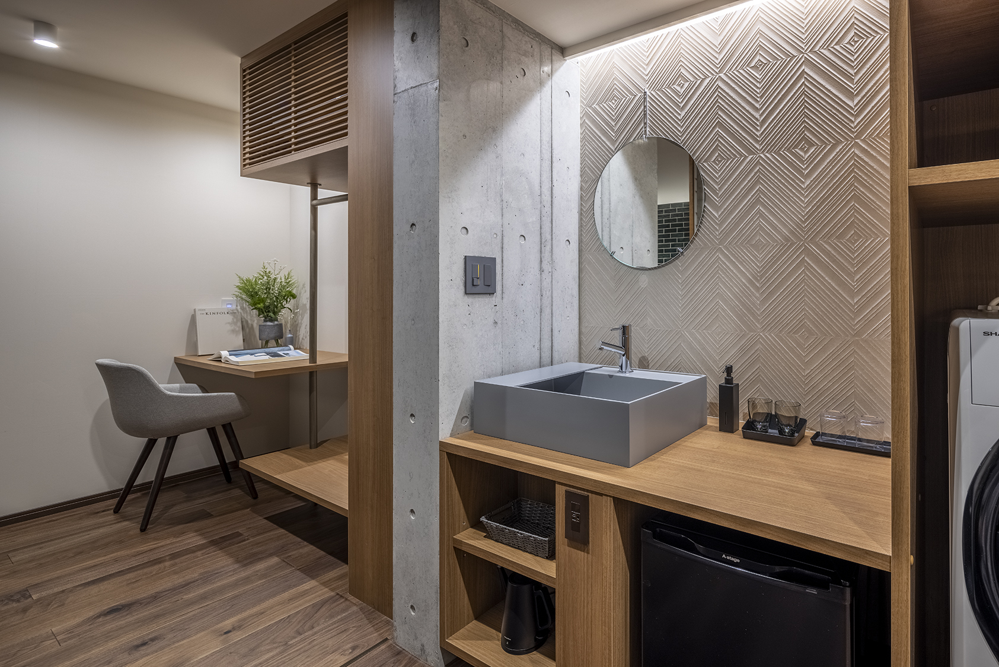
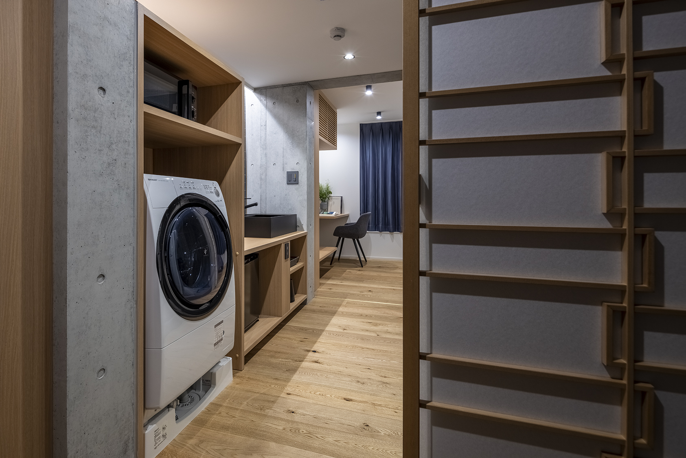
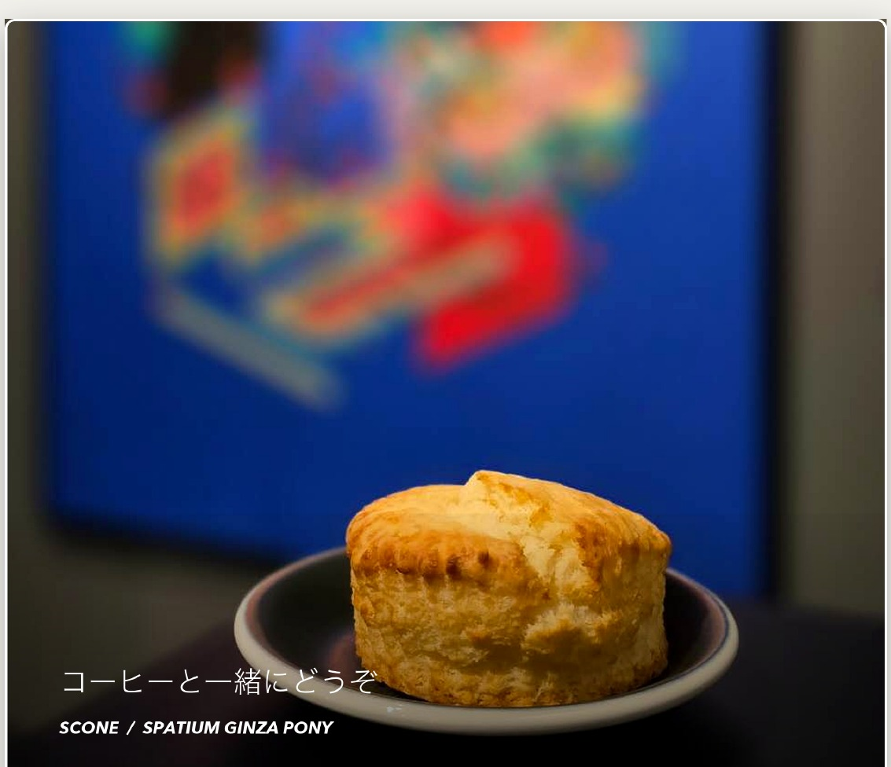
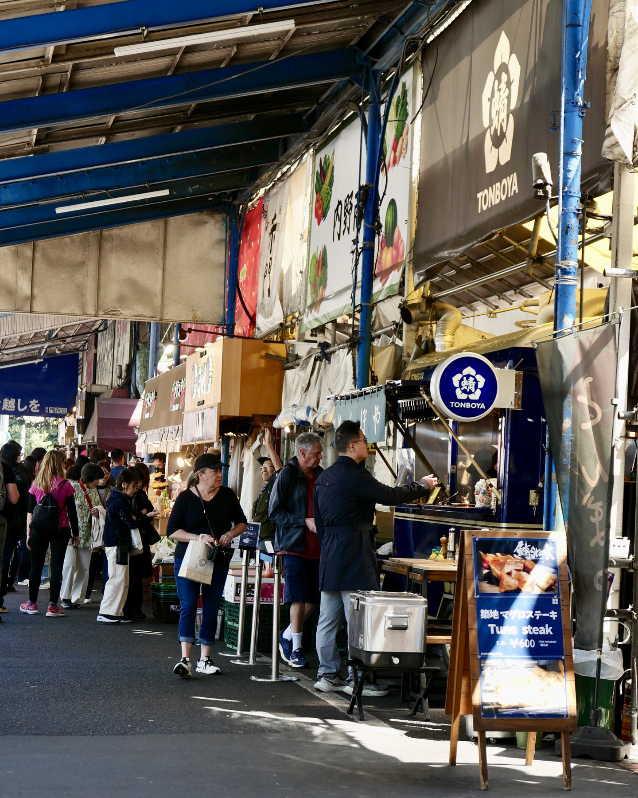
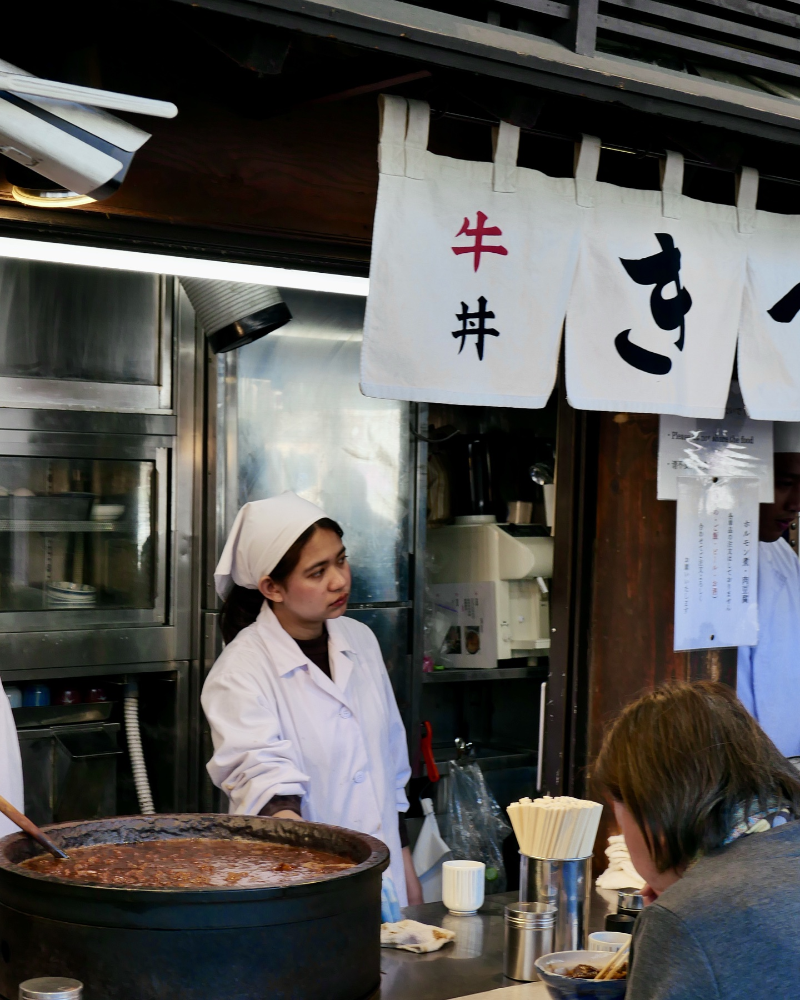
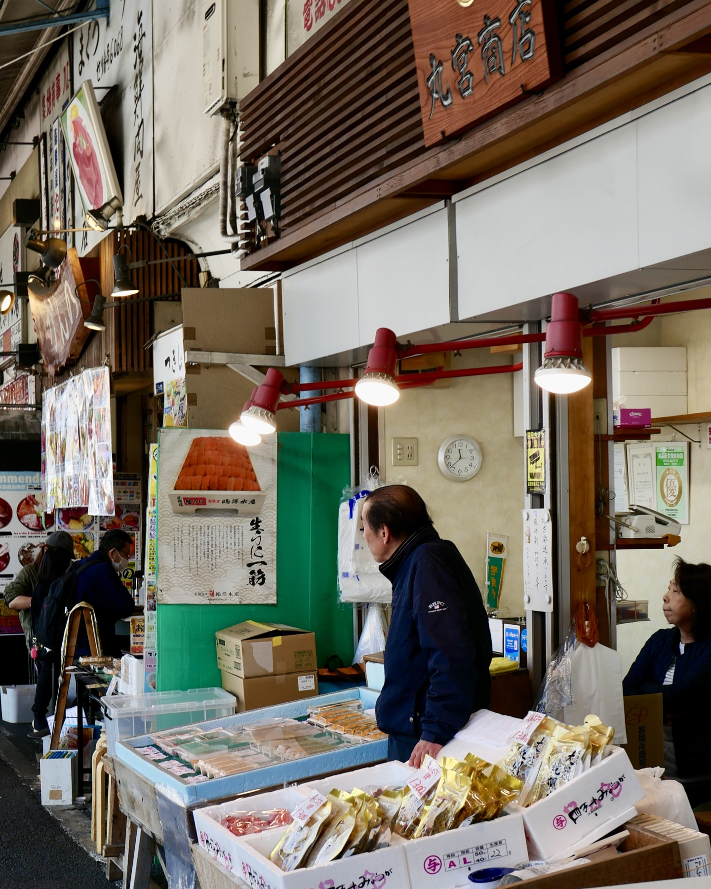
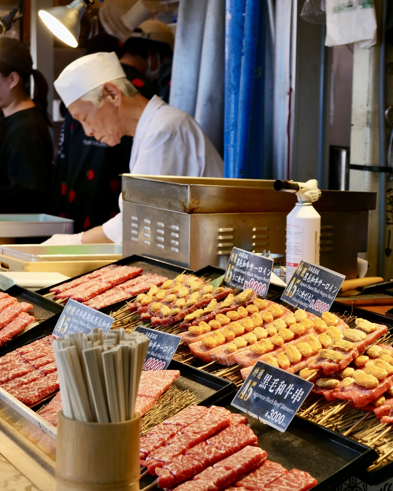

房间信息
房号、门锁、Wi-Fi 如不清楚，请直接找前台/工作人员确认。请不要在公共区域大声讨论门锁或密码信息。
Stay Guide / 中文房内指南
住在築地与银座之间，把东京的一天过得更轻一点。
这本指南放在房间里使用：先看常用信息，再按需要查看咖啡、房内设备、清扫方式和退房检查。
房号、门锁、Wi-Fi 和其他入住相关问题，请以现场说明为准；不清楚时直接找前台/工作人员。本页只保留客人最常用的信息。

房号、门锁、Wi-Fi 如不清楚，请直接找前台/工作人员确认。请不要在公共区域大声讨论门锁或密码信息。
设备异常、漏水、跳闸、无法进门或需要帮助时，请先停止操作，并找前台/工作人员处理。请不要自行随意拨打外部紧急电话。
11:00 前退房。 离开前请检查护照、手机、充电器、衣物、洗衣机、冰箱、空调、电灯、水龙头、窗户和房门。
6-6-11 Tsukiji, Chuo-ku, Tokyo 104-0045
〒104-0045 東京都中央区築地6丁目6-11
SPATIUM GINZA PONY 的价值，不只是“离哪里近”。它把东京的食、街、购物和连续住宿的便利，放在同一个日常动线里。
住在这里，东京不是一天跑完的清单，而是一条可以慢慢使用的城市路线。
築地是东京食文化的入口。场外市场至今仍有许多餐饮、食材、厨具和传统食品店，适合清晨散步、吃早餐，感受东京厨房的一面。
银座则是东京最有代表性的商业街区之一。百货、品牌店、画廊、餐厅、咖啡店和歌舞伎座一带，把传统与现代放在同一个步行范围里。
PONY 夹在这两个区域之间：早上可以去築地，白天可以去银座，晚上回到房间洗衣、休息、整理行李。对短住、商务、购物和连续住宿的客人来说，这种节奏比单纯“离景点近”更实用。
早餐、海鲜、玉子烧、茶、厨具和小店。适合用早晨慢慢进入东京。
购物、餐厅、展览、百货地下食品区和城市散步。适合白天和傍晚。
回到房间后能洗衣、加热、整理行李，把东京行程接得更顺。
轻装出门，先用食物和街区打开一天。
购物、展览、咖啡和会面都在附近。
洗衣、加热、整理行李，让第二天更轻松。
出门前或回房前，到一楼短暂停留。


PONY 适合短住、商务、购物和连续住宿。房内有洗烘机、微波炉、冰箱、水壶和独立浴室，适合把一天的行程轻松整理好。

这台机器可洗衣和烘干。洗烘时请勿放满，建议衣物量控制在滚筒一半以内。

官方容量是洗涤 7kg、洗烘/干燥 3.5kg。请勿塞满。厚毛巾、牛仔裤等较难烘干，请减少数量后再使用。
请勿使用洗手液、沐浴露、洗洁精或过量洗衣液。泡沫太多会影响脱水，也可能让机器停住。
需要洗完后直接烘干，请选择“洗〜乾”。如果只是清洗后自行晾干，请选择“洗濯”。普通衣物选择“標準”即可。
机门锁定时不要用力拉。需要暂停时按“スタート/一時停止”；如果机门仍不开，请等机器解锁，不要硬拉。
程序结束后请尽早取出衣物，避免起皱、潮味和遗忘。
微波炉、水壶和洗衣机最容易因为误用造成起火、漏水、异味或设备损坏。请先看完下面几项，再使用房内设备。
Microwave Safety
便利店便当、外卖容器和包装纸可能含有铝膜或金属边，可能起火或损坏设备。不确定是否可微波加热时，请换成可微波容器，或不要加热。
洗烘请勿超过滚筒一半。衣物太多会无法烘干、报警、漏水或停机。
请勿煮茶包、咖啡、牛奶、汤或食物，可能溢出、留下焦味或损坏设备。
房内可简单加热食品。请避免烹调重油烟或气味较重的食物。
设备冒烟、焦味、漏水、跳闸、持续报警或明显异常时，请立即停止使用，不要继续尝试操作，并找前台/工作人员处理。
房内备品会按入住人数和现场配置准备。需要追加毛巾、垃圾袋、纸巾或其他物品时，请找前台/工作人员咨询。
连住期间会按清扫规则提供新毛巾。需要更换时，请把旧毛巾装好或集中放在房门口。
如需追加，请联系工作人员。垃圾请装袋封好，不要散放在走廊或公共区域。
充电器、转换插头、熨斗等物品如有需求，请先咨询。是否可借用以当天库存为准。
如果发现设备或备品损坏、缺失，请尽早告知。越早反馈，越容易安排处理。
为减少打扰，房间不做每日完整清扫。非清扫日主要处理毛巾和垃圾；完整清扫按固定周期安排。
连住期间，每 3 天安排一次房间清扫。清扫时可更换床单、整理床铺，并进行房间清洁。
非清扫日不会进入房间。新的毛巾会挂在房门口，请自行取用。
需要更换时，请把使用过的毛巾拿出来，集中放在房门口。工作人员会回收。
如有垃圾需要当天回收，请装袋封好后放在房门口。其他时间不要把垃圾散放在走廊或公共区域。
请特别注意禁烟、访客、夜间安静和公共区域使用。规则不是为了打扰客人，而是为了让所有住客和邻里都能安静入住。
客房内、酒店门口及入口周边请勿吸烟。请不要在门口停留吸烟，也不要把烟蒂丢入房内垃圾桶。
夜间请降低说话、音乐、电视和拖动行李的声音，避免影响其他住客及邻里。
只有登记入住的客人可以住宿。外卖请尽量在入口或公共区域领取，不要让配送员进入客房区域。
请关好房门，不要在走廊放置行李、垃圾或私人物品。如有损坏、遗失或异常，请尽早告知。
退房时间为 11:00。离开前请确认个人物品、电器、水龙头、窗户和房门。
护照、手机、充电器、衣物、洗衣机、抽屉、浴室都请检查一遍。
关闭灯、空调和水龙头。关好窗户和房门。
带走冰箱内个人食物，垃圾请按现场指引处理，不要放在走廊。
行李寄存不是自动提供，如需要请提前咨询，是否可寄存以当天安排为准。
一楼咖啡和スコーン适合出门前、回房前或短暂等人时使用。菜单、价格、营业情况和当天供应，请以一楼现场展示为准。
早上去築地前想喝一杯，下午回到酒店想休息一下，或想带一份热咖啡出门时，都可以先到一楼柜台确认当天供应。

菜单可能因日期和时间变化。营业情况、外带、点心供应和详细菜单，请以一楼现场展示为准。
这里不是完整旅游攻略，而是给住客的短路线。早晨去築地吃早餐，白天去银座购物或看展，雨天也可以用室内路线把一天安排得轻松一点。

酒店 → 築地场外市场 → 小吃、寿司、玉子烧或咖啡 → 回酒店 / 去银座。清晨适合轻装出门，市场小店营业时间各不相同。
酒店 → 东银座 / 歌舞伎座周边 → 银座主街 → 百货地下食品区或咖啡店。适合购物、展览、餐厅和商务会面。
先在 1F Cafe 喝咖啡，再去银座商场、百货、地下街或室内餐厅。回房后可以洗衣、烘干衣物、整理行李。



築地场外市场仍保留许多食品、餐饮、厨具和传统食材店。现在的鱼类拍卖已迁往丰洲，但築地仍适合游客吃早餐和逛小店。
早上人会比较多，建议少带行李、穿好走的鞋。很多店铺空间较小，边走边吃和长时间占位请注意现场规则。
银座不只是奢侈品，也有百货、文具、生活用品、咖啡店、餐厅和画廊。适合白天逛，也适合晚上吃饭后散步。
这一区域的优势是“出去方便，回来也方便”。回房后可以洗衣、加热轻食、洗澡休息，让第二天行程继续得更顺。
店铺营业时间、排队情况和菜单每天可能不同。出门前请以现场信息和当天营业情况为准。